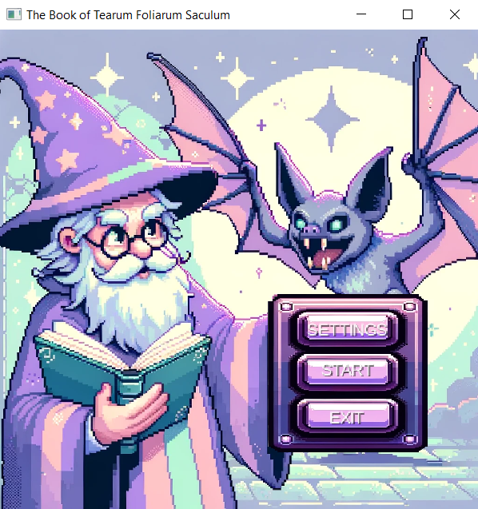
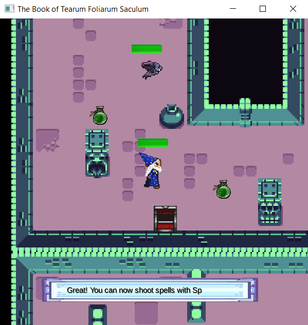

Kontakt informasjon
Navn: Emma W.
Mobil: 000 00 000
Mail: example123@hvl.no
Utdanning
Dataingeniør
Høgskulen på Vestlandet, Bergen
Kombinert 1. og 2. året på bachelorgraden Dataingeniør. 3 årig studie med fokus på programmering og å utvikle programvare, samt konstruksjon og drift av IT-system, men forkortet til 2 år pga. godkjente fag fra tidligere bachelor. Startet utdanningen høsten 2025.
Datateknologi
Universitetet i Bergen, Bergen
Fullført bachelor innen Datateknologi. 3 årig studie med fokus på programmering, testing og utvikling av datasystemer. Startet utdanningen høsten 2022 og fullførte våren 2025.
Tidligere prosjekter
UiB INF112 Semesterprosjekt
Gruppearbeid der vi gjennom semesteret skulle utvikle et valgfritt program med Java. Vi valgte å lage et dungeon crawler spill,kalt "The Book of Tearum Foliarum Saculum". Spillet går ut på å hjelpe trollmannen Gerald med få tak i en viktig boksom har blitt stjålet, og du må passere ulike leveler før du til slutt møter slutt-bossen. Først etter å ha beseiret bossen, kan du få tak i boken og vinner spillet.
Kort video om prosjektet:
The Book of Tearum Foliarum Saculum
 